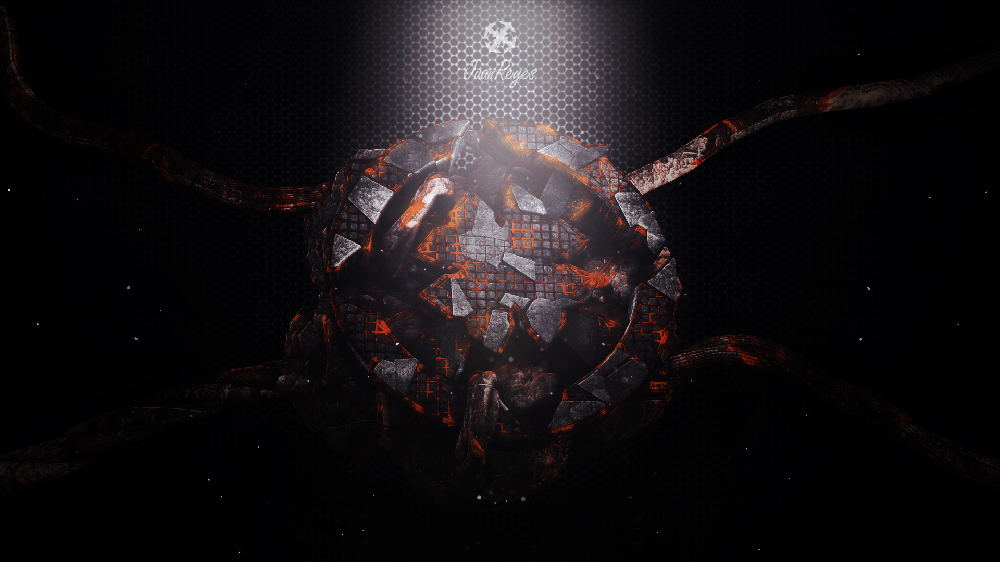
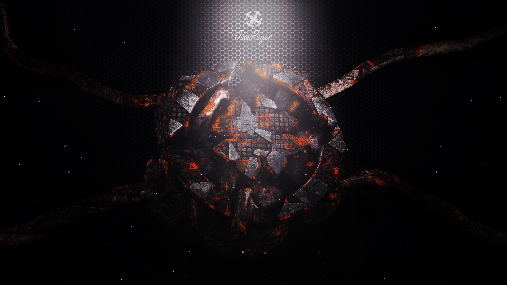

🤩 Mis hobbies & gustos 🌄
 

🌻 Comenzar un nuevo libro 🛡️
No puedo decir que la lectura siempre ha sido parte de mi vida, de hecho no me gustaba leer y las clases de castellano las odiaba, pero desde que encontré ese libro que me hizo olvidar cuánto tiempo llevaba viendo e imaginando cada párrafo no pude dejar de buscar una nueva historia a la cual aventurarme.
💜 Crear diseños 💡
Una de las cosas que más me gusta hacer y sigue siendo una de mis opciones a las que me gustaría dedicarme es el diseño gráfico, crear imágenes llamativas y no muy comunes que lleven un poco de historia personal y de aprendizaje.
Este es uno de los diseños que más me gustan puesto que mi color favorito es el morado y disfrute mucho el proceso de pasar un simlpe dibujo a algo como esto.
En mis inicios de búsqueda de ideas sobre las que diseñar, encontré un tutorial en YouTube sobre como hacer un diseño parecido al de la serie de superheroes "Defenders" con un simple texto asi que